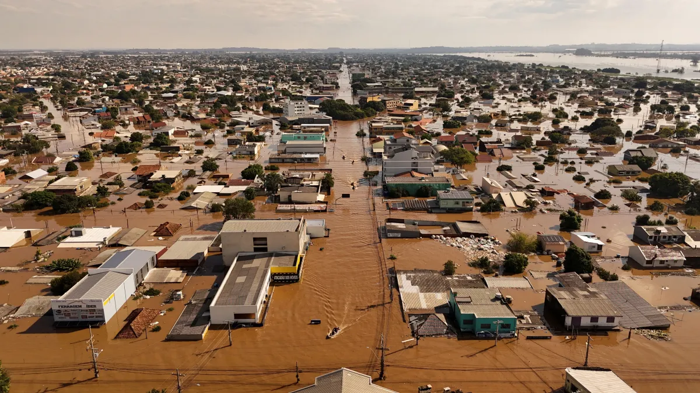
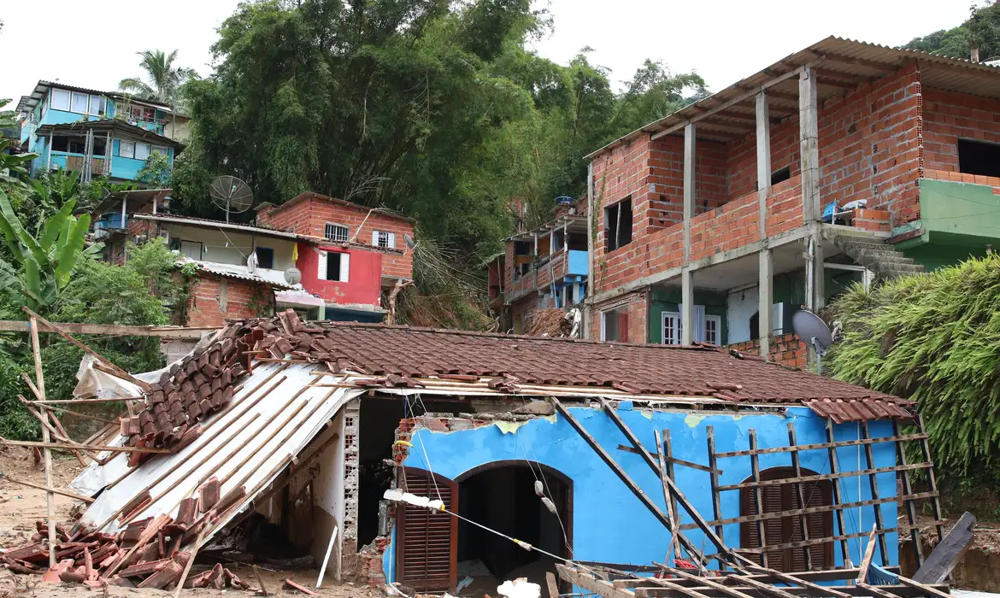
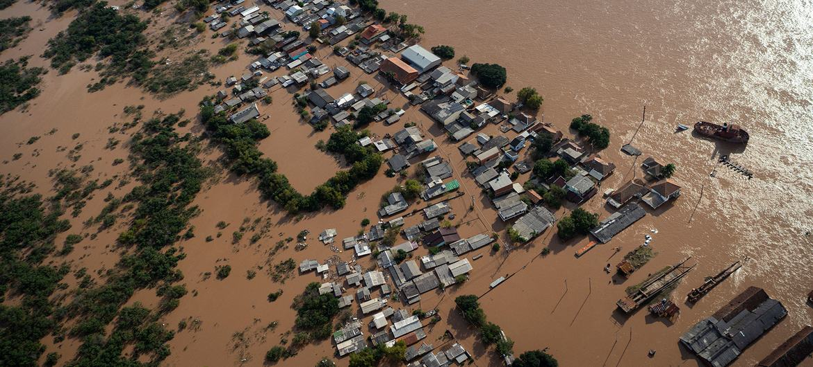
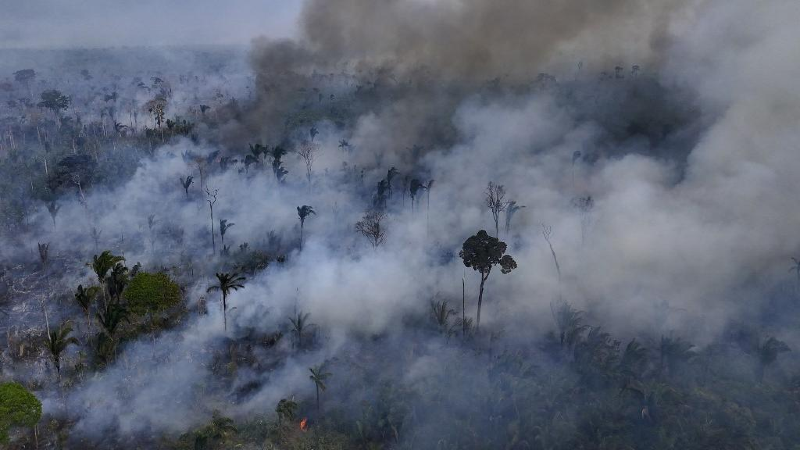
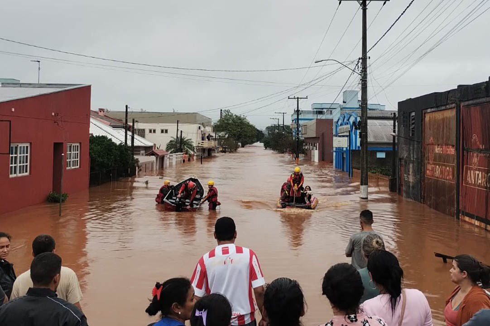
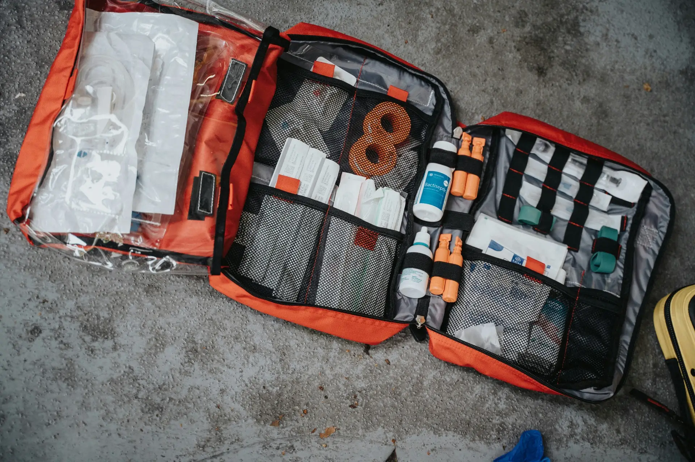

Notícias em destaque

Desastres em 2025 já afetam milhões e expõem urgência de apoio aos Municípios, alerta CNM

Brasil teve 10 eventos climáticos extremos em 2024

Queimadas no Brasil: um dos maiores desastres ambientais do país e suas consequências
Ajuda em casos de desastres

O que fazer em desastres? Defesa Civil orienta população sobre antes, durante e depois

Rádio, remédio e enlatados: UE recomenda que famílias adquiram kit de sobrevivência